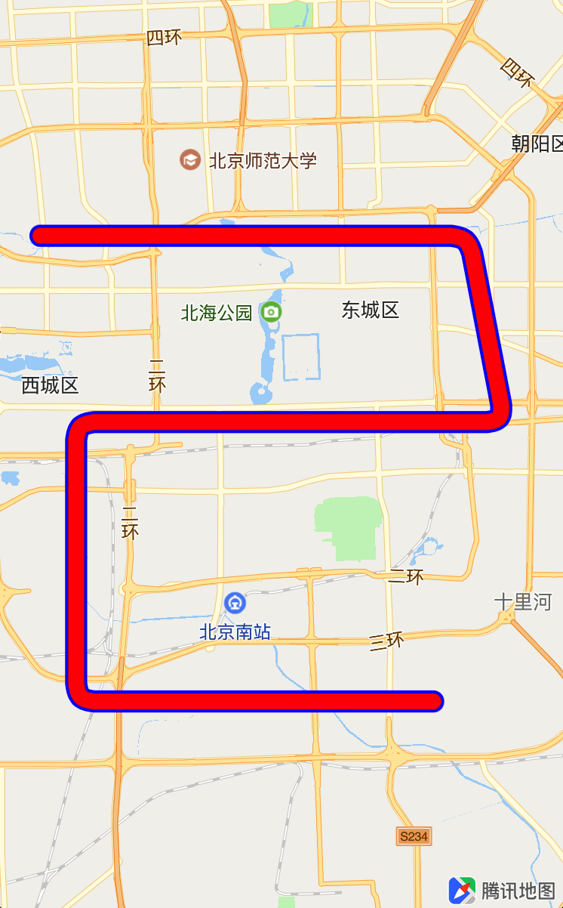
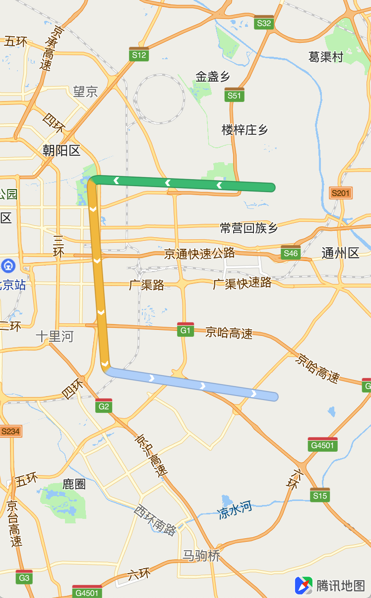
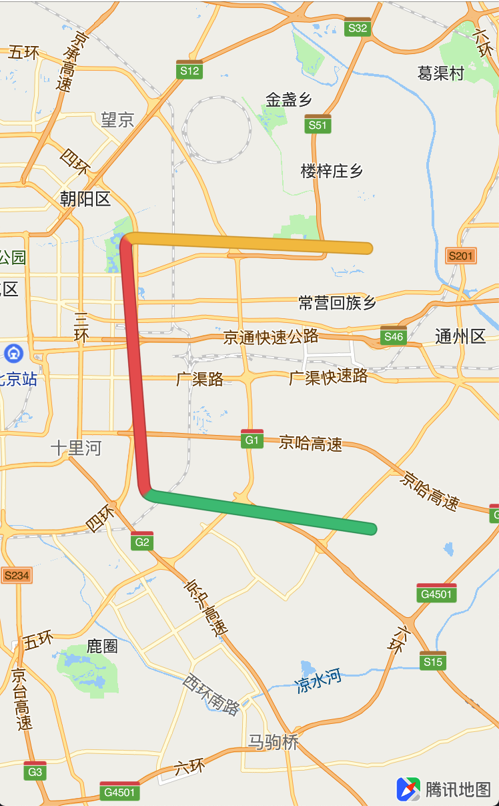
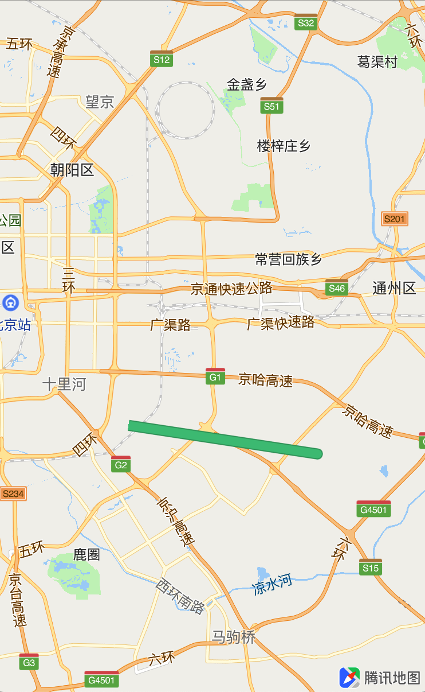
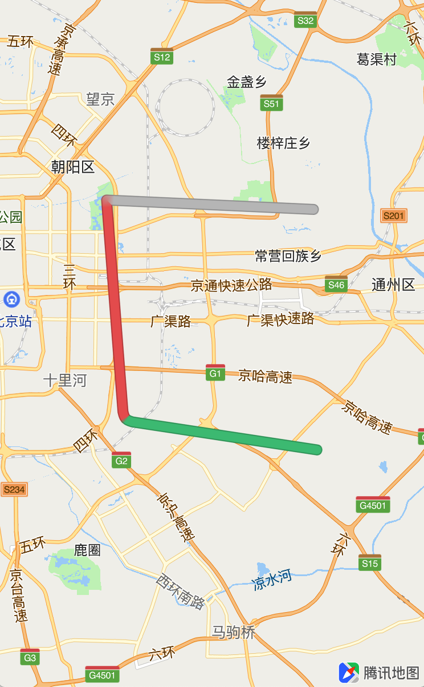
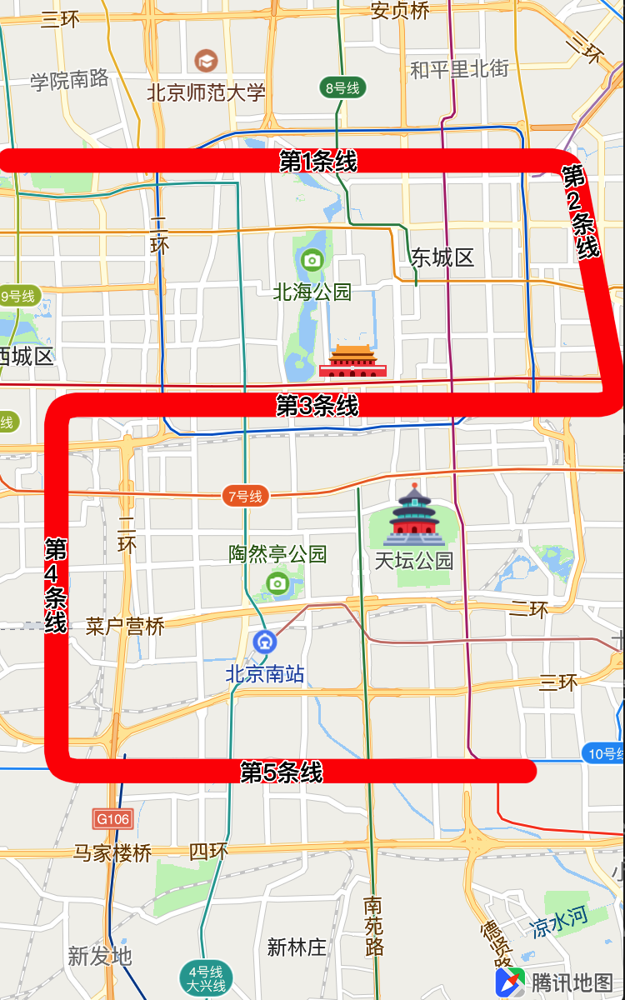

绘制线
折线类QPolyline，由一组经纬度坐标组成，并以有序序列形式建立一系列的线段。本节介绍绘制折线的各个基本用法，内容如下：
- 绘制折线、虚线、自定义纹理折线
- 折线的擦除与置灰
- 动态路名
- 折线的点击事件
折线
绘制折线
绘制折线需要使用两个基本的类：折线数据类QPolyline、折线视图类QPolylineView，基本使用步骤如下：
创建QPolyline数据对象：
// 创建折线起始点、折点坐标 CLLocationCoordinate2D polylineCoords[6]; polylineCoords[0].latitude = 39.9442; polylineCoords[0].longitude = 116.324; polylineCoords[1].latitude = 39.9442; polylineCoords[1].longitude = 116.444; polylineCoords[2].latitude = 39.9042; polylineCoords[2].longitude = 116.454; polylineCoords[3].latitude = 39.9042; polylineCoords[3].longitude = 116.334; polylineCoords[4].latitude = 39.8442; polylineCoords[4].longitude = 116.334; polylineCoords[5].latitude = 39.8442; polylineCoords[5].longitude = 116.434; // 根据坐标点创建折线数据对象 QPolyline *polyline = [QPolyline polylineWithCoordinates:polylineCoords count:6]; // 将折线数据对象添加到地图中 [self.mapView addOverlay:polyline];实现<QMapViewDelegate>协议的
mapView:(QMapView *)mapView viewForOverlay:方法来创建折线视图：- (QOverlayView *)mapView:(QMapView *)mapView viewForOverlay:(id<QOverlay>)overlay { if ([overlay isKindOfClass:[QPolyline class]]) { QPolylineView *polylineRender = [[QPolylineView alloc] initWithPolyline:overlay]; // 设置线宽 polylineRender.lineWidth = 15; // 设置线段颜色 polylineRender.strokeColor = [UIColor redColor]; // 设置边框宽度 polylineRender.borderWidth = 2; // 设置边框颜色 polylineRender.borderColor = [UIColor blueColor]; return polylineRender; } return nil; }效果如图所示：

绘制虚线
虚线的绘制方法与普通的折线绘制基本一样，不同的是在创建QPolylineView时，调用setLineDashPattern:方法设置虚线线段的样式，实线和虚线的线长序列(元素个数必须是偶数)，示例如下：
- (QOverlayView *)mapView:(QMapView *)mapView viewForOverlay:(id<QOverlay>)overlay
{
if ([overlay isKindOfClass:[QPolyline class]])
{
QPolylineView *polylineRender = [[QPolylineView alloc] initWithPolyline:overlay];
polylineRender.lineWidth = 6;
polylineRender.strokeColor = [UIColor colorWithRed:1 green:0 blue:0 alpha:.8];
// 设置overlay虚线样式
[polylineRender setLineDashPattern:[NSArray<NSNumber*> arrayWithObjects:[NSNumber numberWithInt:30],[NSNumber numberWithInt:30],[NSNumber numberWithInt:30],[NSNumber numberWithInt:30], nil]];
return polylineRender;
}
return nil;
}
效果如下图所示：

自定义纹理折线
自定义纹理折线类QTexturePolyline，可以对构成折线的每条线段进行自定义。
自定义纹理折线支持使用纹理图片的方式填充折线的线段，图片应为以1像素为单位的多行的图片；若设置了纹理图片，设置线段颜色类型将无效。
自定义纹理折线还支持在线段中绘制箭头，表示路线的前进方向，基本使用方法如下例所示：
创建QPolyline的子类QRouteOverlay，用于保存折线的分段信息，示例如下：
@interface QRouteOverlay : QPolyline - (id)initWithCoordinates:(CLLocationCoordinate2D *)coords count:(NSUInteger)count arrLine:(NSArray<QSegmentStyle*> *)arrLine; // 保存折线每条线段的分段信息 @property(nonatomic, strong) NSMutableArray<QSegmentStyle *>* arrLine; @end @implementation QRouteOverlay - (id)initWithCoordinates:(CLLocationCoordinate2D *)coordinateArray count:(NSUInteger)count arrLine:(NSArray<QSegmentStyle *> *)arrLine { if (count == 0 || arrLine.count == 0) { return nil; } if (self = [super initWithCoordinates:coordinateArray count:count]) { self.arrLine = [NSMutableArray array]; [self.arrLine addObjectsFromArray:arrLine]; } return self; } @end添加分段纹理绘制折线数据：
const int COUNT = 4; CLLocationCoordinate2D polylineCoords[COUNT]; polylineCoords[0].latitude = 39.9442; polylineCoords[0].longitude = 116.608821; polylineCoords[1].latitude = 39.948517; polylineCoords[1].longitude = 116.484256; polylineCoords[2].latitude = 39.846874; polylineCoords[2].longitude = 116.494518; polylineCoords[3].latitude = 39.833368; polylineCoords[3].longitude = 116.610921; NSMutableArray* routeLineArray = [NSMutableArray array]; // 创建分段样式 for (int i = 0; i < COUNT-1; i++) { QSegmentStyle *subLine = [[QSegmentStyle alloc] init]; subLine.startIndex = i; subLine.endIndex = i+1; // 指定随机颜色: 如果使用了纹理图片，则取值为图片的像素值 subLine.colorImageIndex = arc4random() % 6; [routeLineArray addObject:subLine]; } // 创建分段纹理线段 QRouteOverlay *polyline = [[QRouteOverlay alloc] initWithCoordinates:polylineCoords count:COUNT arrLine:routeLineArray]; [self.mapView addOverlay:polyline];实现代理方法，创建纹理折线视图，并开启箭头显示：
- (QOverlayView *)mapView:(QMapView *)mapView viewForOverlay:(id<QOverlay>)overlay { if ([overlay isKindOfClass:[QRouteOverlay class]]) { QRouteOverlay *ro = (QRouteOverlay*)overlay; QTexturePolylineView *polylineRender = [[QTexturePolylineView alloc] initWithPolyline:overlay]; // 设置分段样式 polylineRender.segmentStyle = ro.arrLine; if ([self.lines indexOfObject:overlay] == 0) { // 使用纹理图片 // polylineRender.styleTextureImage = [UIImage imageNamed:@"colorSample"]; polylineRender.lineWidth = 10; // 开启箭头绘制 polylineRender.drawSymbol = YES; // 设置箭头图片: 如果没有指定，则使用默认的箭头样式 polylineRender.symbolImage = [UIImage imageNamed:@"arrow.png"]; // 设置箭头之间的间距 polylineRender.symbolGap = 52; } return polylineRender; } return nil }效果如图所示

折线的擦除与置灰
擦除与置灰功能，必须在自定义纹理折线的基础上使用。该功能可以擦除折线中的某一条线段，或者将其置灰，示例代码如下：
//擦除路线
-(void) handleEraseLine
{
QTexturePolylineView *polylineView = (QTexturePolylineView *)[self.mapView viewForOverlay:self.lines.firstObject];
[polylineView eraseFromStartToCurrentPoint:CLLocationCoordinate2DMake(39.846874, 116.494518) searchFrom:2 toColor:YES];
}
//置灰路线
- (void)handleTestAction
{
QTexturePolylineView *polylineView = (QTexturePolylineView *)[self.mapView viewForOverlay:self.lines.firstObject];
[polylineView eraseFromStartToCurrentPoint:CLLocationCoordinate2DMake(39.948517, 116.484256) searchFrom:1 toColor:NO];
self.navigationItem.rightBarButtonItems.firstObject.enabled = NO;
}
效果如图所示：
  
动态路名
在创建QPolylineView时，text属性用于在折现线段上面绘制文字，可以用来显示路名。基本使用步骤如下：
创建分段文字
// 创建分段文字 NSMutableArray *segments = [NSMutableArray array]; for (int i = 0; i < 5; i++) { QSegmentText *text = [[QSegmentText alloc] init]; text.name = [NSString stringWithFormat:@"第%i条线", i + 1]; text.startIndex = i; text.endIndex = i + 1; [segments addObject:text]; }创建文字样式
// 创建样式 QTextStyle *style = [[QTextStyle alloc] init]; // 设置优先级为normal, 可以被其他高优先级的线遮盖 style.priority = QTextPriority_High; style.textColor = [UIColor blackColor]; style.strokeColor = [UIColor whiteColor]; style.fontSize = 10;创建QText对象，调整polylineView的显示层级，并设置文字
// 创建QText QText *text = [[QText alloc] initWithSegments:segments]; // 设置显示等级: 需要设置为 QOverlayLevelAboveBuildings 或 QOverlayLevelAboveRoads polylineView.displayLevel = QOverlayLevelAboveRoads; // 设置文字 polylineView.text = text;效果如图所示：

折线的点击事件
实现<QMapViewDelegate>中的
mapView: didTapOverlay:方法，点击折线覆盖物时调用该方法，示例代码如下：
- (void)mapView:(QMapView *)mapView didTapOverlay:(id<QOverlay>)overlay {
if ([overlay isKindOfClass:[QPolyline class]]) {
NSLog(@"折线点击事件");
}
}
常见问题
折线正常显示，但是路名文字没有显示：
需保证最上层显示的文本信息中QTextStyle的priority属性为
QTextPriority_High，以及对应的polylineView的displayLevel属性为QOverlayLevelAboveRoads或者QOverlayLevelAboveBuildings。两条折线的路名文字发生重叠如何解决：
当绘制的两个polylineView相交时，两个polylineView的文本信息便有可能发生碰撞。需要显示的文本信息需将QTextStyle的priority属性设置为
QTextPriority_High，不需要显示的文本信息则将QTextStyle的priority属性设置为QTextPriority_Normal。文本信息显示样式支持动态修改。